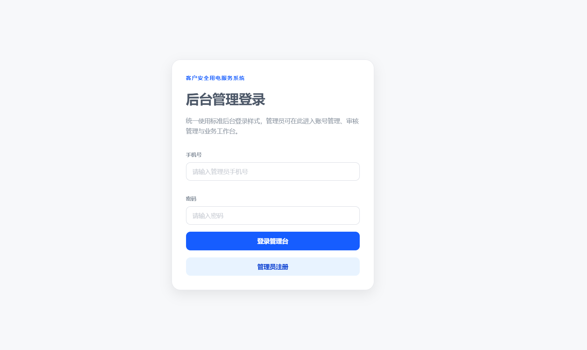
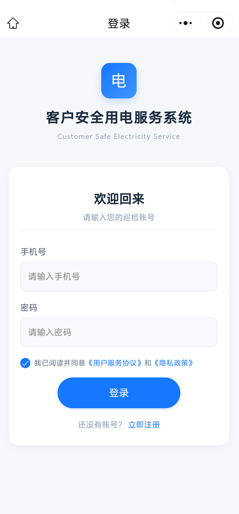

◎
设备一物一码
在地图完成设备点位建档、地址定位与二维码生成，设备身份、位置和历史记录可快速关联。
为什么值得关注
系统围绕“人、设备、位置、工单”四类关键对象设计，让管理人员看得见现场，让维修人员少跑冤枉路，让每次处置都留下可信凭证。
在地图完成设备点位建档、地址定位与二维码生成，设备身份、位置和历史记录可快速关联。
维修人员扫码签到时校验与设备点位的距离，记录时间、位置与距离信息，减少非现场操作。
综合人员在线状态、定位新鲜度、在办工单与距离筛选可派人员，让故障响应更有依据。
全流程闭环
让每个流转节点都有明确状态，让管理动作与现场凭证自然衔接。
关联设备点位，完成故障描述与高、中、低等级标记。
优先选择在线、定位有效且无活跃工单的就近人员。
小程序扫码签到，填写处置方案、检查项并上传现场照片。
管理端审核通过或驳回；维修人员、管理员依次完成电子签名。
汇集工单、照片、签名和记录，自动生成维修报告并留存历史档案。
面向实际运维
微信小程序服务于到场、填报和签名；Web 管理后台服务于调度、地图化总览、审核、统计与档案管理。
基于地图展示设备点位、状态标识与在线人员位置；支持地图选点、地址搜索与经纬度反查。
覆盖待派单、已派单、处理中、待审核、待签名、已完成等状态，支持驳回重修、撤销与重派。
问题描述、处理方案、配件使用、检查记录与维修前后照片集中归集，形成现场处置凭据。
支持维修人员和管理员手写签名，签名与工单状态联动，并可叠加印章生成正式报告。
按权限范围汇总检查完成、异常发现与用户诉求，支持生成周期性工作总结与档案导出。
支持市级、区县、供电所与维修人员的差异化数据范围控制，前后端共同保障访问边界。
数据边界与可信处理
技术实现
项目采用微信小程序与 Vue 3 管理后台双入口，Flask API 统一承接认证、调度、工单、签名、文档与统计等服务能力。
集成能力包含 JWT、腾讯地图与位置服务、二维码生成、Pillow 图像处理、python-docx 文档生成。
适配移动现场操作，缩短从到场到填报的路径。
面向调度与审核的统一工作台，支持组织范围内的业务管理。
以清晰的 API 与服务层承载核心业务规则和流程状态。
让照片、签名、报告和档案成为可回查的流程成果。
界面展示
请选择终端，通过左右按钮查看功能页面；每张截图下方均配有当前环节的实现说明。
重要说明：所有截图中的业务数值、人员、工单、地址及统计结果均为测试/演示数据，不代表真实生产经营情况；涉及的公开数据已经获得公司允许使用。


电力运维维修管理系统以现场闭环为核心，把管理要求转化为可落地的数字化作业路径。